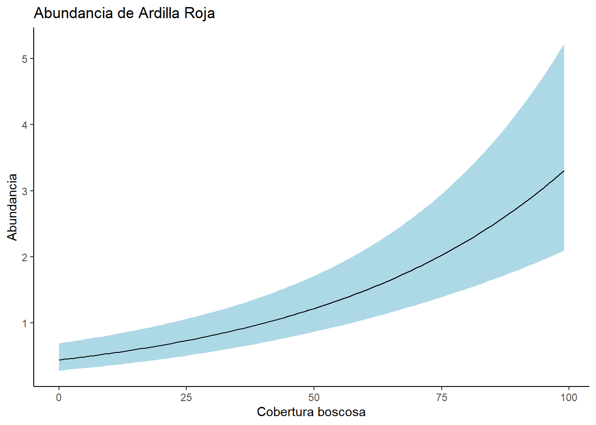
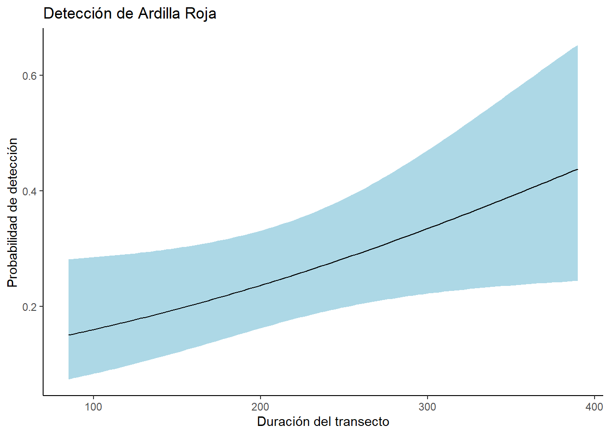
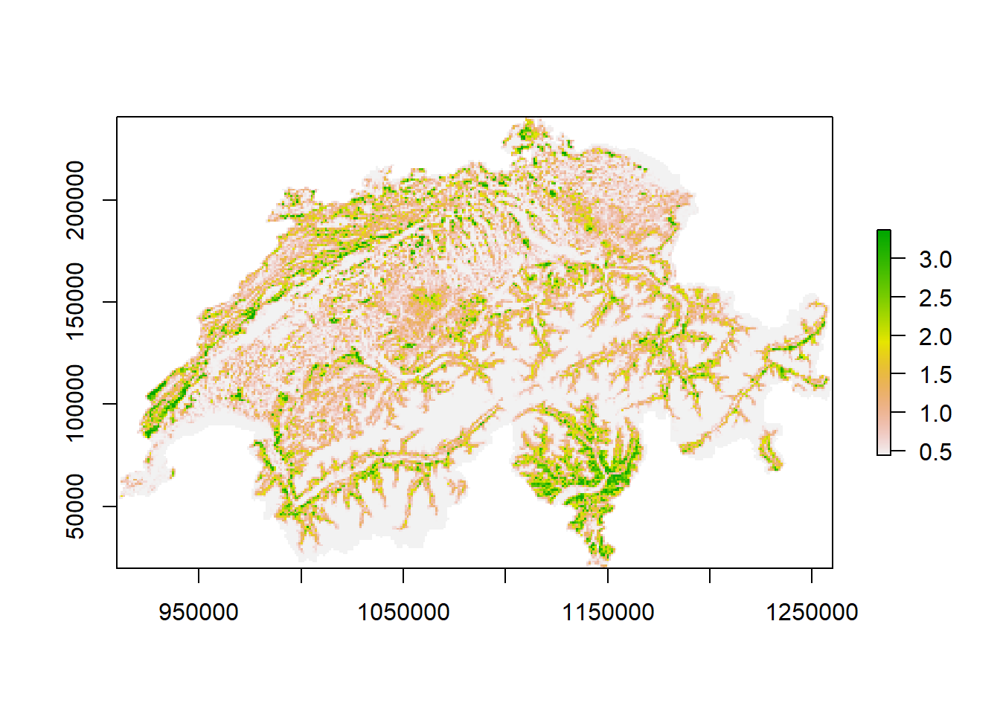
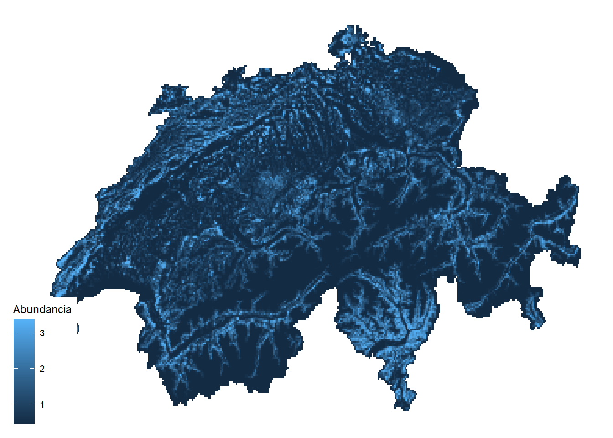

library(tidyverse)
library(unmarked)
library(AICcmodavg)
ArdillaRoja <- readRDS("data/SwissSquirrels.rds")Clase 6: El modelo Royal-Nichols y otros modelos N-Mixture no estándar
Los modelos N-Mixture son métodos de inferencia sobre la abundancia que se ajustan explícitamente a algún tipo de error de medición. Por lo general, adoptan una distribución de Poisson o similar para la variación espacial, temporal o espaciotemporal en los estados de abundancia latente N. Sin embargo, dependiendo del protocolo aplicado para medir la abundancia, el modelo de observación puede variar bastante. En la mayor parte de este curso, cubrimos el molesto error de detección de falsos negativos que conduce a una interpretación binomial condicional del proceso de observación. Aquí cubriremos dos diseños de variantes de modelos N-Mixture. En la primera, en lugar de observar conteos, solo tenemos información sobre si el conteo fue cero o mayor que cero, es decir, detección- no detección (presencia/ausencia), lo que conduce a un Benoulli/Poison mixture model. En la segunda variante, podemos observar un miembro de N varias veces, lo que representa efectivamente un tipo de error falso positivo además de los falsos negativos habituales. Esto conduce a la adopción de un Poisson/Poisson mixture model.
Cuando se cumplen los supuestos paramétricos adecuados, podemos estimar la abundancia a partir de datos de detección/no detección (“presencia/ausencia”). El modelo de Royle-Nichols (o modelo RN para abreviar) es otro ejemplo de ello (Royle y Nichols, 2003). El modelo básico de N-Mixture es una mezcla binomial/Poisson para los conteos observados, mientras que el modelo RN es una mezcla Bernoulli/Poisson para los datos de detección/no detección observados. Es un modelo de mezcla N importante en el árbol genealógico de modelos de este curso, porque proporciona un vínculo conceptual entre los modelos jerárquicos N-Mixture para la abundancia y el modelo N-Mixture para la ocurrencia (es decir, el modelo de abundancia clásico. El modelo RN puede ser útil para estimar la abundancia a partir de mediciones replicadas de presencia/ausencia, para acomodar la heterogeneidad de detección cuando se enfoca en la ocupación o para vincular los datos de ocupación con los datos de abundancia en un modelo integrado, y se ve así:
- Modelo para el tamaño de la población de cuadrantes (modelo de proceso de estado):
\[N_i \sim Poisson(\lambda_i)\]
\[log(\lambda_i) = \beta_0 + covariate effect \]
- Modelo de error de medición (modelo de observación):
\[y_{ij}|N_i \sim Bernoulli(P^*_{ij})\]
\[P^*_{ij} = 1 - (1 - P_{ij}^N_i)\]
\[logit(P_{ij}) = \alpha_0 + covariate effect\]
Pasar cada replica en columnas diferentes de acuerdo a la especie de ave
y <- ArdillaRoja[,c("det071", "det072", "det073")]
SiteCov <- ArdillaRoja[,c("ele", "forest")]
ObsCov <- list(Fecha = ArdillaRoja[,c("date071", "date072", "date073")],
Dur = ArdillaRoja[,c("dur071", "dur072", "dur073")])Ardillas_umf <- unmarkedFrameOccu(y = y, siteCovs = SiteCov,
obsCovs= ObsCov)
summary(Ardillas_umf)unmarkedFrame Object
265 sites
Maximum number of observations per site: 3
Mean number of observations per site: 2.82
Sites with at least one detection: 116
Tabulation of y observations:
0 1 <NA>
553 194 48
Site-level covariates:
ele forest
Min. : 250 Min. : 0.0
1st Qu.: 550 1st Qu.: 8.0
Median :1150 Median :33.0
Mean :1189 Mean :34.5
3rd Qu.:1850 3rd Qu.:56.0
Max. :2750 Max. :99.0
Observation-level covariates:
Fecha Dur
Min. : 13.00 Min. : 85.0
1st Qu.: 31.00 1st Qu.:195.0
Median : 50.00 Median :230.0
Mean : 49.41 Mean :231.9
3rd Qu.: 66.50 3rd Qu.:270.0
Max. :118.00 Max. :570.0
NA's :48 NA's :51 #### MODELAR DETECCION PRIMERO
ModelDet0 <- occuRN(~1 ~1, Ardillas_umf) ##Null model
ModelDet1 <- occuRN(~Fecha ~1, Ardillas_umf)
ModelDet2 <- occuRN(~Dur ~1, Ardillas_umf)
ModelDet3 <- occuRN(~Fecha + Dur ~1, Ardillas_umf)library(AICcmodavg)
DetModels <- list(ModelDet0, ModelDet1, ModelDet2, ModelDet3)
DetNames <- c("Nulo", "Fecha", "Dur", "Fecha +Dur")
aictab(DetModels, DetNames, sort = TRUE)
Model selection based on AICc:
K AICc Delta_AICc AICcWt Cum.Wt LL
Fecha +Dur 4 787.70 0.00 0.96 0.96 -389.77
Dur 3 795.32 7.62 0.02 0.98 -394.61
Fecha 3 795.71 8.01 0.02 1.00 -394.81
Nulo 2 804.80 17.10 0.00 1.00 -400.38#### MODELAR DETECCION PRIMERO
ModelOccu0 <- occuRN(~Fecha + Dur ~ 1, Ardillas_umf) ##Null model
ModelOccu1 <- occuRN(~Fecha + Dur ~ ele, Ardillas_umf)
ModelOccu2 <- occuRN(~Fecha + Dur ~ forest, Ardillas_umf)
ModelOccu3 <- occuRN(~Fecha + Dur ~ ele + forest, Ardillas_umf)
ModelOccu4 <- occuRN(~Fecha + Dur ~ ele + I(ele^2), Ardillas_umf)
ModelOccu5 <- occuRN(~Fecha + Dur ~ forest + I(forest^2), Ardillas_umf)library(AICcmodavg)
AbunModels <- list(ModelOccu0, ModelOccu1, ModelOccu2, ModelOccu3, ModelOccu4, ModelOccu5)
AbunNames <- c("Nulo", "ele", "forest", "ele + forest" , "ele2", "forest2")
aictab(AbunModels, AbunNames, sort = TRUE)
Model selection based on AICc:
K AICc Delta_AICc AICcWt Cum.Wt LL
forest 5 747.66 0.00 0.94 0.94 -368.72
ele + forest 6 753.21 5.55 0.06 1.00 -370.44
Nulo 4 787.70 40.03 0.00 1.00 -389.77
ele 5 796.61 48.94 0.00 1.00 -393.19
ele2 6 817.95 70.28 0.00 1.00 -402.81
forest2 6 854.45 106.78 0.00 1.00 -421.06summary(ModelOccu2)
Call:
occuRN(formula = ~Fecha + Dur ~ forest, data = Ardillas_umf)
Abundance (log-scale):
Estimate SE z P(>|z|)
(Intercept) -0.8238 0.23121 -3.56 3.67e-04
forest 0.0204 0.00311 6.55 5.86e-11
Detection (logit-scale):
Estimate SE z P(>|z|)
(Intercept) -1.47084 0.62022 -2.37 0.01772
Fecha -0.01262 0.00479 -2.63 0.00842
Dur 0.00486 0.00236 2.06 0.03915
AIC: 747.4331
Number of sites: 264
ID of sites removed due to NA: 124
optim convergence code: 0
optim iterations: 128
Bootstrap iterations: 0 confint(ModelOccu2, type = "state", level = 0.95) 0.025 0.975
lam(Int) -1.27690754 -0.37059483
lam(forest) 0.01428756 0.02649642fitstats <- function(Mod_global2) {
observed <- getY(Mod_global2@data)
expected <- fitted(Mod_global2)
resids <- residuals(Mod_global2)
sse <- sum(resids^2,na.rm=TRUE)
chisq <- sum((observed - expected)^2 / expected,na.rm=TRUE)
freeTuke <- sum((sqrt(observed) - sqrt(expected))^2,na.rm=TRUE)
out <- c(SSE=sse, Chisq=chisq, freemanTukey=freeTuke)
return(out)
}
(pb <- parboot(ModelOccu2, fitstats, nsim=100, report=1))
Call:
parboot(object = ModelOccu2, statistic = fitstats, nsim = 100, report = 1)
Parametric Bootstrap Statistics:
t0 mean(t0 - t_B) StdDev(t0 - t_B) Pr(t_B > t0)
SSE 130 4.18 6.53 0.267
Chisq 525 -34.24 19.93 0.950
freemanTukey 167 1.14 7.31 0.485
t_B quantiles:
0% 2.5% 25% 50% 75% 97.5% 100%
SSE 107 114 122 126 131 138 140
Chisq 516 522 545 558 573 596 616
freemanTukey 141 152 161 167 171 178 183
t0 = Original statistic computed from data
t_B = Vector of bootstrap samplescHat_pb <- pb@t0[2] / mean(pb@t.star[,2])
cHat_pb Chisq
0.9387448 Forest <- data.frame(forest = seq(min(ArdillaRoja$forest, na.rm = TRUE), max(ArdillaRoja$forest, na.rm = TRUE), length.out = 100))
Forest_pre <- predict(ModelOccu2, newdata =Forest, type = "state", appendData = TRUE)ggplot(data= Forest_pre, aes(x= forest, y= Predicted))+
geom_ribbon(aes(ymin= lower,
ymax= upper), fill = "lightblue") +
geom_line(color= "black") +
labs(x = "Cobertura boscosa",
y = expression(paste("Abundancia")))+
ggtitle("Abundancia de Ardilla Roja") +
theme_classic()
Dur <- data.frame(Dur = seq(min(ArdillaRoja$dur071, na.rm = TRUE), max(ArdillaRoja$dur073, na.rm = TRUE), length.out = 100),
Fecha = mean(ArdillaRoja$date072))
Dur_pre <- predict(ModelOccu2, newdata =Dur, type = "det", appendData = TRUE)ggplot(data= Dur_pre, aes(x= Dur, y= Predicted))+
geom_ribbon(aes(ymin= lower,
ymax= upper), fill = "lightblue") +
geom_line(color= "black") +
labs(x = "Duración del transecto",
y = expression(paste("Probabilidad de detección")))+
ggtitle("Detección de Ardilla Roja") +
theme_classic()
SuizaBosque <- readRDS("data/SuizaBosque.rds")SuizaBosque_pre <- predict(ModelOccu2, type = "state", newdata = SuizaBosque,
appendData = TRUE)library(raster)Loading required package: sp
Attaching package: 'sp'The following object is masked from 'package:unmarked':
coordinates
Attaching package: 'raster'The following objects are masked from 'package:unmarked':
getData, projectionThe following object is masked from 'package:dplyr':
selectSuizaBosque_raster <- data.frame(x= SuizaBosque_pre$x,
y = SuizaBosque_pre$y,
z = SuizaBosque_pre$Predicted)
SuizaBosque_raster <- rasterFromXYZ(SuizaBosque_raster)
plot(SuizaBosque_raster)
SuizaBosque_raster_df <- as.data.frame(SuizaBosque_raster, xy = TRUE)
library(ggthemes)
ggplot() +
geom_raster(data = SuizaBosque_raster_df, aes(x = x, y = y, fill = z)) +
theme_map() +
scale_fill_gradient(na.value = "white") +
labs(fill = "Abundancia")